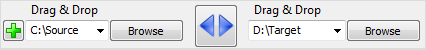
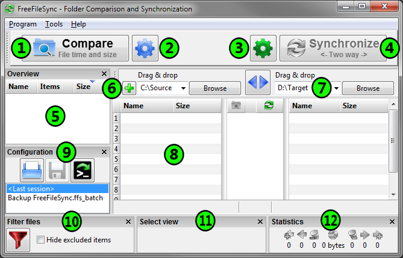

Folder Comparison and Synchronization
Usage:
- Choose left and right directories.

- Compare them.
- Select synchronization settings.

- Press Synchronize to begin synchronization.
Main Dialog Overview

- Start comparison
- Change comparison settings
- Change synchronization settings
- Start synchronization
- Tree overview panel
- Add additional folder pairs
- Select left and right folders
- Synchronization preview
- Save/load configuration
- Include/exclude specific files
- Select categories to show on grid
- Synchronization statistics